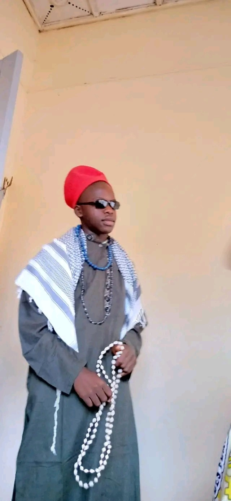

BULUPIY GALATI JOEL
JOËL BULUPIY GALATI est un étudiant congolais en deuxième année licence à l’Université Protestante au Congo(UPC)/Faculté des Sciences Informatiques(FASI). Il est né le 22 février 632 à MAGBENDA au MAGBOSA STATES. Joël est le garçon de la famille de 3 enfants dont 2 filles et lui le seul garçon.
Habitant de Tay , Q.MANANA
Université Protestante au Congo

AKIM CHALAZIRE MUKULUBANJI
Est un étudiant congolais en
deuxième année licence du nouveau système LMD à
l’Université Protestante au Congo(UPC) dans
la Faculté des Sciences Informatiques(FASI).
Je suis né le 27 décembre 2001 à Bukavu dans la province du Sud-Kivu. Je suis le premier d’une famille de 3 enfants dont deux filles et cinq garçons. Fils de BAHATI CHALAZIRE et ZAWADI MISENGA, passionné du basketball et du football.
Université Protestante au Congo

AKOLA MBAMBA CHRISTINE
Christine AKOLA est une étudiante congolaise en L2(LMD) faculté des sciences informatiques(FASI) à L'université Protestante au Congo(UPC).
Elle est née le 25/07/2000. Christine est née dans une famille de 5 enfants composée d'un seul garçon et quatre filles dont elle est la Benjamine de sa famille.
Université Protestante au Congo

ALOMA SALEH BENNY
BENNY ALOMA SALEH est une étudiante congolaise en deuxième année licence à l’Université ProtestanteauCongo(UPC)Faculté des Sciences Informatiques(FASI).Elle est née le 27 juillet 2003 à Kinshasa aux environ de 23h. Benny est la 3eme d’une famille de 9 enfants.Diplômée d’état à l’école TURCO-CONGOLAISE MAARIF sections cientifique,option mathematiques-physique.Sa couleur préférée est lerouge.Elle est passionné par ses études,l'informatique.Elle a toujours voulu de venir ingénieur en aéronautique précisément mécanicienne.
Université Protestante au Congo

ATWEKA NGWANZA CHRIST-EN-VIE
Est né le 22 Aveil 2002 à Kinshasa , en République Démocratique du Congo,d’un père congolais et d’une mère Congolaise . Issu d'une famille de 3 garçons dans laquelle il est le cadet,il grandit dans un quartier animé de la ville. Dès son plus jeune âge, Chris a montré un vif intérêt pour le sport en général,le football en particulier et ainsi qu’à son pays..
Après avoir obtenu son diplôme d'études secondaires en 2021,, Chris poursuit ses études à l'Université Protestante Au Congo , où il est en passe d’obtenir un diplôme de licence en FASI.
Université Protestante au Congo

BANGALA MPANYA ANGE
BANGALA MPANYA ANGE est un étudiant congolais en deuxième année licence à l’Université Protestante au Congo(UPC)/Faculté des Sciences Informatiques(FASI). Il est né le 11 décembre 2002 à Kinshasa en RDC. Ange est né dans une famille de 6 enfants dont 5 garçon est 1 fille il est troisième enfant de sa famille. Il grandit à Kingabwa dans un quartier pas très connu d’où il passait toute son enfance il aime bien jouer sa passion c’est le football son sport préféré ou il évolua au poste de gardien de but dans son club du quartier Ba Nzoyi (les abeilles). Fait l’école maternelle à Saint Joseph de Cluny situé sur Kingabwa avenue buffle, ou il étudie la deuxième, et troisième maternelle. Ainsi entamant la vie primaire à l’école Saint François Collège Kiwanuka. Il étudie la première jusqu’en sixième primaire est eu son diplôme primaire avec un pourcentage de 69 et au TENAFEP 41 était parmi les meilleurs côtes de l’école.
Université Protestante au Congo

BANZA KALUMBA MERVEIL
Un étudiant congolais en deuxième année licence à l’Université Protestante au Congo (UPC), dans la Faculté des Sciences Informatiques (FASI). Il est né le 13 Mars 2003, dans la ville province de Kinshasa en République Démocratique du Congo. Merveil est d’une famille de 7 enfants dont 2 filles et 5 garçons, Fils de Mr Banza Dieudonné et de Mm Maloba Germaine. Origine de la ville province de Haut-lomami.
Université Protestante au Congo

BAYAULI MWASA PASCAL
Est un étudiant congolais en deuxième année licence à l’Université Protestante au Congo(UPC)/Faculté des Sciences Informatiques(FASI). Il est né le 18 octobre 2003 à Kinshasa en République Démocratie du Congo. Pascal est le fils unique de ses parents dont le père est BAYAULI MUSHABAA DEOGRACIAS et de la mère MUANJELU FILESI ANGE.
Université Protestante au Congo

BAYONNE KOUKEM EMMANUELLA-THYLANE
Est une étudiante de nationalité congolaise née le 14 novembre d’une certaine année. Bayonne est la seconde dans une famille de trois enfants dont un garçon et deux filles. Ayant obtenu son diplôme en Latin-Philosophie avec une bonne mention, ce qui lui a permis de ne pas faire un test d’admission à l’Université Protestante au Congo/UPC qui est le lieu où elle poursuit ses études aujourd’hui en deuxième année licence dans la FACULTE DES SCIENCES INFORMATIQUES / FASI.
Université Protestante au Congo

BOKELE WALALA HERVE
Est un étudiant congolais en deuxième année de cycle de licence à l’Université Protestante au Congo (UPC) en sigle, en faculté des sciences informatiques (FASI). Il est né le 24 novembre 2001 à Kinshasa , République démocratique du Congo Herve est deuxième d’une famille de 5 enfants dont 4 garçons et une fille cadette, Directeur financier l’entreprise à Fondation pour le Développement de Kiri (FODEKI) en sigle.
Université Protestante au Congo

BOKULU BONIFACE BELVIE
Est un étudiant congolais en deuxième année licence à l’Université Protestante au Congo(UPC)/Faculté des Sciences Informatiques(FASI). Il est né à kinshasa d’une petite famille de 6 enfants, 5 garçons et une fille dont il est quatrième.
Université Protestante au Congo

BONGOLO NADE HEIDI
Est une étudiante congolaise à l’Université Protestante au Congo (UPC) dans la faculté de sciences informatiques (FASI) en L2 LMD.
Elle est née le 06/03/2004. Cinquième de sa famille de 6 enfants dont 5 filles et 1 garçon.
Université Protestante au Congo

BOY-MUKE EXAUCE
Est un étudiant congolais en deuxième année licence à l’Université Protestante au Congo(UPC)/Faculté des Sciences Informatiques(FASI). Il est né le 20 octobre 1890 à KINSHASA en République Démocratique du Congo . Dernier enfant d’une famille de 14 enfants ; il a poursuivi ses études secondaires au collège Saint Joseph/Elikya.
Université Protestante au Congo

BWALYA CHALICHUPI DANIEL
Est un étudiant Congolais en deuxième année Licence à l’Université Protestante du Congo (UPC)/Faculté des Sciences Informatique (FASI).
Il est né à KINSHASA, le 1 Septembre
En REPUBLIQUE DEMOCRATIQUE du CONGO
Deuxième dans une famille de six enfants
Université Protestante au Congo

DOKOTA KANGA DANELLA
Est une étudiante congolaise en deuxième année licence à l’Université Protestante au Congo (UPC)Faculté des Sciences Informatique (FASI). Elle est née le 06janvier 2003 à Kinshasa en RDC. Danella est la cadette d’une famille de 12 enfants dont 5 garçons et 7 filles. Danella a fait ses études maternelles ainsi que primaires au complexe scolaire les Bambins, ses études secondaires et humanités dans l’écoles : Lycée Motema Mpiko et collèges Frère Alingba. Elle a eu son diplôme d’état en 2021 avec une note de 60%.
Université Protestante au Congo

EKIND'ENKANI NGOY ROCHER
né le 5 février 2003 à Kinshasa, est un étudiant de l’Université Protestante au Congo (UPC) en sciences informatiques. Il est le cadet d’une famille de trois enfants (RUTH EKIND’ENKANI & Jephté EKIND’ENKANI ). Il fit ses études maternelles et primaires à l’école bonne d’enfance au sein de laquelle il excella avec brio. Il obtient son diplôme d’Etat à l’Institut Mgr Bokeleale. Il est originaire du MAI-NDOMBE dans le secteur BASENGELE. Fils de Adolphe EKIND’ENKANI ISOMBO et MBONKITA NSASI Cathy, il est le fruit de le résultat du fruit de leur amour. Il se démarque au sein de son école en participant à plusieurs activités professionnelles (Danses, défilé , Poèmes , récitations, etc…).
Université Protestante au Congo

EKOFO WEMA CORNEIL
un étudiant congolais en deuxième année licence du système LMD à l’université protestante au Congo en sigle Upc / faculté des sciences informatiques en sigle FASI. Il est né à Kinshasa, le 29 juin 2003, Corneil est le 3eme d’une famille de 5 enfants dont les noms sont respectivement {IYOTO ISAKO Schadrack,MBOYO ISAKO Prescille,EKOFO WEMA Corneil,EYALE ISAKO Charon,ILONGA ISAKO Israël} Dont le père répond au nom de IYOTO ISAKO Theophile et Madame Bola liey Anastasie. Il a fini ses études primaires au complexe scolaires Monano 2 à limete 14eme rue poids lourds. Il a fini ses études secondaires et humanitaires à l’école Saint Raphael où il a obtenu son diplôme avec 64% en option commerciale et gestion. Il est originaire de Tshuapa plus précisément Esangani.
Université Protestante au Congo

ENGEBA NTOTIMBE PROSPERE
Est un étudiant congolais en deuxième licence à l’université protestante au Congo (UPC), faculté de sciences informatique (FASI). Il est né le 07 février 2004 à Kinshasa. Prospère est le c adet d’une famille de 3 enfants dont 2 garçons et une fille…
Université Protestante au Congo

FIMPA MALANGU RILORD
Est un étudiant congolais en deuxième année de Licence à l’UNIVERSITE PROTESTANTE AU CONGO (UPC)/Faculté des Sciences Informatiques (FASI). Il est né le 13 Juin 2003 à Kinshasa en RDC. Rilord est le deuxième d’une famille de 3 enfants, dont il est le seul garçon. Fils de Cathy Kabonge et Guylain Fimpa, il a débuté ses études à Cours Sénèque, puis au Collège Révérend Kim, et enfin à l’Institut Monseigneur BOKELEALE.
Université Protestante au Congo

HADJI AMURI ARISTOTE
Est un étudiant congolais en deuxième année de licence à l’Université Protestante au Congo(UPC) dans la Faculté des sciences informatique (FASI). Il est né à Kinshasa le 03 mars d’une certaine année. Aristote est le fils ainé d’une famille de 3 enfants. Son père s’appelle Serge KABALANGA et sa mère Sylvie SAIDIYA. Aristote aime beaucoup manger le fufu, son sport préféré est le football, son club préféré est le FC Barcelone, son joueur préféré est Lionel Andres MESSI et sa ville préférée est Miami Beach situé aux États-Unis d’Amérique.
Université Protestante au Congo

IBUYE BALEGARIME JUNIOR
Est un étudiant congolais en deuxième année licence à l’Université Protestante au Congo(UPC)/Faculté des Sciences Informatiques(FASI). Né à Kinshasa le 30/03 d’une certaine année. Cadet d’une famille de 4 enfants dont 3 garçons et une fille. Junior Ibuye a fini ses études humanitaires au Collège Saint Joseph/ Elikya dans l’option Mathématique-Physique avec distinction.
Université Protestante au Congo

IKUKU ONDA BENJAMIN
Est un homme très calme, intelligent, narcissique, croyant(Christ)…, il est le cadet d’une famille des 5 enfants dont 2 filles et 3 garçons, né le 11 /Septembre/ 2003 en RDC dans la ville province de Kinshasa.Issu d’un père Sakata nommé IKUKU M’FIRI NKEWA Adrien et d’une mère Sakata aussi nommée MBUYULU MONGBAKE Françoise, Benjamin est connu par d’autres sur les réseaux sociaux sous le pseudo de Ben IKUKU. Actuellement, c’est un étudiant de L’Université Protestante au Congo en deuxième année de licence (LMD) dans la faculté des sciences informatiques.
Université Protestante au Congo

IMBA SAM SAM
Né le 07/Mars/1945 à Kinshasa, est cadet dans une famille de 7 enfants dont 5 garçons et 2 filles. Ce jeune homme est passionné de la musique chrétienne, de la cuisine, des sujets d’explorations scientifiques dans plusieurs domaines de la vie courante notamment : le domaine informatique avec des sujets en rapport avec l’Intelligence Artificielle et le Software Engineering ainsi le domaine de la musique chrétienne plus particulièrement. Toujours apprendre et dans la simplicité, c’est sa devise.
Université Protestante au Congo

ALOMA SALEH BENNY
Est un etudiant congolais en deuxième année licence à l’Université Protestante au Congo (UPC) en Faculté des Sciences Informatiques (FASI) il est né à kinshasa le 18 octobre 2000 . Emmanuel est le cadet d’une famille de 5 enfants dont 4 garçons et une fille .
Université Protestante au Congo

ISSA KITIMA BIN-RAMAZANI
ISSA KITIMA BIN-RAMAZANI est un étudiant congolais en deuxième année licence à l’Université Protestante au Congo (UPC)/Faculté des Sciences Informatiques (FASI). C’est passionner d’informatique, plus dans le domaine touchant le réseau et la maintenance des différentes outils et logiciels informatique., il décide d’en faire l’objet de ses études pour devenir informaticien. ISSA reste aussi très intéresser par la musique et le monde musical. Auteur de quelques compositions propre à lui, il a su se faire un nom dans le monde la musique mais aussi grâce à une activité sur le réseau.
« L’Objectif est de réussit en faisant ce qu’on aime et ce en quoi nous sommes douées »
Université Protestante au Congo

ITO AVIOTI ELTON
Né à Kinshasa le 21/05/2002 Etudiant en deuxieme année, faculté des sciences informatiques à l’université Protestante au Congo, originaire de la Province de Haut-Uele.Diplômé d’Etat en Section Scientifique, Option : Chimie-Biologie en 2021, Etude secondaire au Complexe Scolaire Frère Nkadilu et primaire au petit Collège Bosembo. Fils du défunt Néné Avioti et Gisèle Dimo, Fils unique de cette union.
Université Protestante au Congo

KALALA CIALA JONATHAN
Est un étudiant congolais en deuxième année licence à L'université Protestante au Congo (upc) en faculté de sciences informatiques(FASI).
Il est né le 26/09/2000 à Kinshasa. Jonathan est né dans une famille de 5 personnes 3 garçons et 2filles il est troisième dans famille.
Université Protestante au Congo

KALALA SEFU BIENFAIT
Est un étudiant congolais en deuxième année de licence à l’Université Protestante au Congo(UPC)/Faculté des Sciences Informatiques(FASI). Il est né le 15 juin 2003 à Kinshasa ville province de la RDCongo dans une famille chrétienne de 5 enfants dont-il occupe la troisième place entre deux filles et deux garçons. Passionné du sport et de la musique, il intégra la chorale de l’église Évangélique “Jésus la Gloire” où il sert Dieu en jouant au piano. Actuellement, l’étudiant KALALA est à la quête du duplôme de licence en science informatique de l’université protestante au congo.
Université Protestante au Congo

KALOMBO KAZADI NOBLESSE
Kalombo Kazadi Noblesse est un étudiant de l’UPC né le 12 mars 2004 au Cotonou. Il a grandi à Lagos, au Nigeria. Né le 12 mars 2004 au Cotonou, Kalombo Kazadi Noblesse passe son enfance dans quartier populaire de Cotonou. Son père, kalombo Emmanuel et sa mère jolie Muadi sont des Congolais. En 2006, âgé de 2 ans, il quitte le Cotonou pour le Nigeria ; Il s’inscrit dans une école qui se trouve à Lagos appelé Caleb international School en 2008. Il gagne en concours de français et d’autre diverse activité jusqu’à ce qu’il termine ses études primaire. En 2014 il prend l’avion avec sa famille pour venir vivre aux Congo avec sa grand-mère ou il consacre une année à apprendre la langue française. En 2015, KALOMBO KAZADI fait sa toute première inscription dans un pays étranger a L’E.I.B le Cartesien qui est une école bilingue.En 2018, il quitte le Cartesien pour aller s’inscrire au lycée madame de sévigné.En 2021, il raccroche son diplôme d’état avec 62% en faisant la section math-physique. En conclusion, la vie de KALOMBO KAZADI NOBLESSE a été marquée par des réalisations remarquables et des défis surmontés ; son parcours, de ses humbles débuts à son ascension vers la renommée, est une source d’inspiration pour beaucoup.
Université Protestante au Congo

KALONJI KABEYA JOEL
Est un étudiant congolais en deuxième année licence à l’Université Protestante au Congo(UPC)/Faculté des Sciences Informatiques(FASI). Il est né le 09 novembre 2002 à Kinshasa en RDC d’une fratrie de 8 enfants dont 4 filles et 4 garçons d’où il occupe la place de 5 eme. Passionné d’automobiles depuis tout petit Joël apprend à conduire à l’âge de 11 ans.
Université Protestante au Congo

KALUME NTUMBA ALAIN
Est un étudiant congolais en deuxième année de licence à l’Université Protestante au Congo(UPC) dans la Faculté des sciences informatique (FASI). Il est né à Kinshasa le 21 mai d’une certaine année. Alain vient d’une famille de 14 enfants dont 8 garçons et 6 filles, son père est un militaire et sa mère une commerçante. Il a fait ses études primaires au collège Don Bosco et ses études humanitaires à l’institut de la Gombe option électricité industriel où il a obtenu son diplôme d’état.
Université Protestante au Congo

KANA MAKIESE EXAUCEE
Est une étudiante congolaise en deuxième année licence du nouveau système LMD à l’Université Protestante au Congo(UPC)/Faculté des Sciences Informatiques(FASI). Elle est née le 01 Mai 200… à Kinshasa dans la République Démocratique du Congo. Exaucée est la deuxième d’une famille de 9 enfants dont 3 filles et 6 garçons....
Université Protestante au Congo

KATENDE WA KATENDE GHISLAIN
Est un étudiant congolais en deuxième année de licence à l’Université Protestante au Congo(UPC) dans la Faculté des sciences informatique (FASI). Il est né à Kinshasa le 19 novembre d’une certaine année. Il joue au football et au basketball, il a fait ses études humanitaires à l’école Révérend Kim où il a obtenu son diplôme d’état.
Université Protestante au Congo

KAYEMBA KALONJI SERGE
Est un étudiant congolais en deuxième année de licence à l’Université Protestante au Congo(UPC) dans la Faculté des sciences informatique (FASI). Il est né à Kinshasa le 09 août d’une certaine année.
Université Protestante au Congo

KAYEYA TAMBWE DYLAN
Est un homme drôle, intelligent, attentif, chrétien, sportif…, il est deuxième d’une famille de 3 enfant dont 2 fille et 1 garçon, né le 19/Avril/ 2003 en RDC a Kinshasa. Fils de KAYEYA LUKASU ERIC (père) et de WANGAJI NDEMBA REBECCA (mère) Il a effectué ses études primaires et secondaires dans la ville de Kinshasa et en est ressorti détenteur d’un diplôme de fin de cycle primaire et d’un diplôme de fin de cycle humanitaire de l’année 2020-2021. Actuellement, c’est un étudiant de L’Université Protestante au Congo en deuxième année de licence (LMD) dans la faculté des sciences informatiques.
Université Protestante au Congo

KHONDE MBADU ARCHIP
Je suis un étudiant congolais à l’Université Protestante au Congo(UPC) en deuxième année licence, faculté des sciences informatiques(FASI). Je suis né dans une famille chrétienne le 14/mars/2003 en RDC dans la ville de Kinshasa. Je suis le fils ainé de la famille qui est composée de quatre (4) enfants au total, dont trois (3) garçons et une (1) fille ; dont le père s’appelle AARRON MBADU MAVINGA et la mère ANGEL MUAKA POLA. J’ai obtenu mon diplôme d’Etat à l’Ecole D’application de l’Université Pédagogique Nationale (EDAP/UPN) en 2021 élève en latin philo (littéraire). J’ai eu à faire une formation d’anglais après avoir obtenu mon diplôme, au Centre de formation cecontec/upn et au the wise center, mais je me suis limité au premier niveau, parce que je devais m’inscrire à l’université… Voilà c’est tout ce que je peux dire concernant ma bibliographie.
Université Protestante au Congo

KIEKIE YEDIDIA CHRIS
Est un étudiant en faculté des sciences informatiques à l’université protestante au Congo, en deuxième licence. Il est aussi le secrétaire de la startup K’zer Business. Né à Kinshasa de la complicité de son Père Franck KIEKIE et de sa mère Maguy LUTUMBA, le 30 décembre 2002. C’est ingénieur en réseau en devenir et qui promet belle avenir pour le pays.
Université Protestante au Congo

KIESE MFUTILA GENEROSE
Est une étudiante en L2 (lmd) en faculté de sciences informatiques à L'université Protestante au congo.Elle est née le 15/05/2004 à Kinshasa. Generose est la quatrième dans la famille de 5enfants dont 3 garçons et 2 filles.
Université Protestante au Congo

KIMFUTA NANIKAFUAKO CHELLA
Est une étudiante congolaise en deuxième année licence à l’Université Protestante au Congo(UPC)/Faculté des Sciences Informatiques(FASI). Elle est né le 25 juillet 2003 à Kinshasa en RÉPUBLIQUE DÉMOCRATIQUE DU CONGO. Chella est la troisième d’une famille de 5 enfants dont 5 filles. Née du père SIMON KIMFUTA LWANGU et de la mère ELIE KIMESA NGOMBIE, Chella commence son parcours scolaire à la maternelle de l’école C.S MERIBA située à la cité maman Mobutu dans la commune de Mont-Ngafula et c’est dans cette même école qu'elle obtenu son ENAFEP.Après cella, elle décida de quitter le C.S MERIBA et s'inscrire au LYCÉE MOTEMA MPIKO et c’est dans ce même lycée qu'elle obtenue son diplôme d’État en Pédagogie générale.
Université Protestante au Congo

KOYO NSUNGU CHRISTIAN
Est un étudiant congolais en deuxième année licence à l’Université Protestante au Congo(UPC)/Faculté des Sciences Informatiques(FASI).
Université Protestante au Congo

LAPUTU ZUP-MUMPEYA TRIAL RESIST
Est un étudiant congolais en deuxième année licence à l’Université Protestante au Congo(UPC) dans la Faculté des Sciences Informatiques(FASI). Fils d’un officier supérieur de Force armée de la République démocratique du Congo et d’une femme d’affaires congolaise.Il est le quatrième enfant d’une famille de 8 enfants dont 5 filles et 3 garçons, il est élevé durant plusieurs années en République démocratique du Congo avant d’aller poursuivre ses études secondaires à Luanda, capitale de l’Angola, en Afrique australe.Naissance et Origines Laputu Zup-Mumpeya Trial resist naît le 05 janvier d’une certaine année à 13h43’ à la maternité de Binza Delvaux (Maternité des Sœurs) à Kinshasa.
Université Protestante au Congo

LOUKOUNYI MBOUYAMBA JOSEPH
Est un jeune étudiant congolais de l’Université Protestante au Congo dans la Faculté des Sciences Informatiques, né le 22 février à Brazzaville. Diplômé d’état au Collège Notre Dame du Congo section Scientifique, option biologie-chimie. Passionné de football, technologie et surtout jeu vidéo.
Université Protestante au Congo

LUBANZADIO MILANDU EMMANUEL
Né le 10 Mai 2006 à Kinshasa, en RDC, est un étudiant en sciences informatiques à l'Université Protestante Au Congo. Il est 2iem des deux enfants de LUBANZADIO Benjamin et MAKINUTEWA Hadassa dont la sœur est Rejoy. Sa famille est d'origine Congolaise. Il commence ses études maternelles à KAMA, primaires à l'école Chrétienne La Source De Vie, puis secondaires à l'institut mgr Bokeleale où obtient son diplôme.
Université Protestante au Congo

LUBELA TSHIAMA EXAUCE
Né un certain 24/11/2003 à Kinshasa , né d'une famille de deux enfants dont il est le prémisses suivit de son frère DANIEL BIKINDU LUBELA ils sont issus de FIFI GABANA KEMBO et PAPY LUBELA TSHIAMA.Exauce a décroché son diplôme en biochimie au groupe scolaire TUMBA où il était parmi les bons joueurs d'handball de la génération et maintenant étudiant en deuxième licence en sciences informatiques à l'université protestante au Congo.
Université Protestante au Congo

LUMBU WAZENGA BENI
Est un étudiant congolais en deuxième année licence à l’Université Protestante au Congo (UPC)/Faculté des Sciences Informatiques (FASI). Il est né le 10 février 0000 à Kinshasa en RDC. Beni est le cadet d’une famille de 3 enfants dont 1 fille et 2 garçons.
Université Protestante au Congo

LUNDULA ONEMA MASSIMO
MASSIMO LUNDULA ONEMA est un étudiant congolais en deuxième année de licence à l’Université Protestante au Congo(UPC) dans la Faculté des sciences informatique (FASI). Il est né à Kinshasa le 03 octobre d’une certaine année. Massimo est le cadet d’une famille de 4 enfants dont il est le seul garçon, son père s’appelle Marcel ONEMA et sa mère Louise NDAYA. Il a fait ses études primaires au complexe scolaire éveil et ses études humanitaires au collège saint Théophile de lemba où il a obtenu son diplôme d’état.
Université Protestante au Congo

MABEKA MASIMANGO RHEMA
Est un étudiant congolais en deuxième année licence à l’Université Protestante au Congo (UPC)/Faculté des Sciences Informatiques (FASI). Il est né le 24 mars à Kwilu-Ngongo au Kongo Central. Rhema est l’ainée d’une famille de 3 enfants dont 2 filles et lui le seul garçon…. Depuis petit, fasciner par les ordinateurs, il décide dans faire l’objet de ses études pour devenir informaticien, précisément dans les domaines touchant les bases de données.Rhema reste aussi très intéresser par la musique et le management.Il a déjà eu à travailler dans un label et une maison de production, ce fut sa première expérience dans le monde du travail. Suivant beaucoup de formation a gauche a droite, car très inspirer, intelligent et ambitieux, il compte accomplir et réaliser ses objectifs de vie.
Université Protestante au Congo

MAKASHI MBUYI NATHAN
MAKASHI MBUYI NATHAN est un étudiant congolais en deuxième année licence à l’Université Protestante au Congo(UPC)/Faculté des Sciences Informatiques(FASI). Il est né l e 23 mars 1999 à Kinshasa , fils de monsieur André kaykolongo et madame lady piema, 3e fils d’une famille de 4 enfants, Réside sur l’avenue kimbondo num 346 c/bandalungwa Q /lumumba, travail à mi-temps dans l’entreprise HELIUM BALLON , FBO au seins de l’entreprise FOREVER LIVING PRODUCT.
Université Protestante au Congo

MALU HERITIER
MALU HERITIER est né le 25 Avril 1960 à Los Santos étudiant à l 'Université Protestante au Congo (UPC) en deuxième licence dans la faculté de sciences informatiques(FASI)..
Université Protestante au Congo

MALU SEPHORA
Née le 20 Novembre 1800 à kinshasa dans une famille composée de 5 enfants dont 3 filles et 2 garçons. Elle commencera ses études maternelles à l’E.P LISANGA où elle sera remarquée par ses enseignants par son intelligence et sa discipline ; cela va lui valoir le prix de la meilleure élève de sa promotion. Elle va continuer ses études primaires dans la même école où elle va obtenir son certificat de fin d’études primaires avec 87% qui lui permettra de commencer ses études secondaires au Lycée Monseigneur Shaumba où elle sera deuxième lauréate de sa promotion aux examens d’Etat avec 79%.Aujourd’hui elle travaille sur des projets ou idées informatiques qui avec le temps pourrait se concrétiser et aider la médecine ainsi que d’autres domaines à connaître une suite de développement grâce encore à l’informatique.
Université Protestante au Congo

MANDUNDU TSHISUMENE EXAUCEE
Est une étudiante congolaise en deuxième année licence à l’Université Protestante au Congo(UPC)/Faculté des Sciences.
Université Protestante au Congo

MAVINGA BAMBA EXAUCE
Est un étudiant congolais en deuxième année licence à l’Université Protestante au Congo(UPC)/Faculté des Sciences Informatiques(FASI). Il est né le 12 Avril 2004 à Kinshasa en République Démocratique du Congo. Exaucé est né dans une famille de 6 enfants dont 4 garçons et 2 filles et dont il est lui-même l’aine. Il aime la musique, est fan du foot, basket-ball, de la technologie et de la science. Il a fait une grande partie de ses études secondaires dans la province du Kongo-Central dans le territoire de Moanda. Diplômé en électricité à l’école d’application (EDAP/UPN).Jeune ambitieux, il adore passer ses journées à réfléchir sur ce qu’il peut apporter dans son pays, en matière de la science. A cause de sa passion pour les technologies et la science, il a préféré faire la faculté des sciences informatiques.
Université Protestante au Congo

MAZAMBI HENOCK
Est un développeur web passionné, né le 24 septembre 2003 à Kinshasa, en République démocratique du Congo. Issu d'une fratrie de cinq enfants, avec trois garçons et deux filles, il a grandi dans un environnement familial chaleureux et bienveillant.Dès son plus jeune âge, Henock a montré un intérêt prononcé pour la technologie et l'informatique. Son attrait pour la création de sites web et les possibilités offertes par le monde numérique l'ont poussé à se lancer dans une carrière de développeur web.Actuellement, Henock poursuit ses études en deuxième licence du système LMD à la faculté des Sciences informatiques. Son parcours académique lui a permis d'acquérir une solide base de connaissances en programmation, en développement web et dans d'autres domaines liés à l'informatique.
Université Protestante au Congo

MAZYAMBO NTUMBA JOSEPH
Est un étudiant congolais en deuxième de licence a l’université protestante au Congo (UPC) facultés des sciences informatique (FASI).Il est né le 22 janvier 2002 à Kinshasa. Joseph est 8ème d’une famille de 9 enfants composé de 5 garçons et 4 filles. Il a fait son école primaire a Révérend Kim, son secondaire a Bokeleale et la fin de son humanités a sévigné.
Université Protestante au Congo

MBENDE BOOTO MICHAEL
Est un étudiant congolais en deuxième année licence a l’université Protestante au Congo (UPC) / Faculté des sciences informatiques (FASI). IL est né le 16 juin 2002 à Kinshasa, Michael est l’aine d’une famille de 4 enfants dont 2 filles et 2 garçon. Passionné de la lecture de la parole de Dieu et de la musique gospel précisément le RAP, dont il est auteur de plusieurs freestyles disponibles sur tous ses comptes Facebook, Instagram… Il est fils d’un professeur et chef de bureau a la onction publique et d’une mère commerçante…IL aime l’Europe et aimeriez poursuivre ses études de Master aux USA dans la cyber sécurité informatique car c’est son rêve.
Université Protestante au Congo

MBIYA NGOIE DAVID
Etudiant de l’université protestante au Congo (UPC) en deuxième année de licence (LMD)/Faculté des sciences informatique(FASI).il est né le 25 juillet 2001 à Kinshasa .David et l’avant dernier d’une famille de 4 garçons, dont lui il occupe la 3eme place
Université Protestante au Congo

MBOMBO SYNTHIA SYNTICHE
Est une étudiante congolaise en deuxième année licence a l’Université protestante au Congo (UPC) / faculté des sciences informatique (FASI) elle ne le 15 Mai 2004 à Kinshasa synthia est la cadette d’une famille de 2 enfants dont un graçon et une seul fille.
Université Protestante au Congo

META MUSNGA SARAH
Née à Kinshasa, le 05 août d'une certaine année, META MUSENGA Sarah est une étudiante Congolaise à l'Université Protestante au Congo (UPC) dans la Faculté de Sciences Informatiques(FASI) L2 LMD.Sortie d'une famille de Cinq(5) enfants dont trois garçons et deux filles.J'occupe la deuxième place et je suis fille ainée !
Université Protestante au Congo

MIJIMBU BOSANGE GISELE
Est une étudiante Congolaise en deuxième année de licence a l’Université Protestante au Congo (UPC) /Faculté des sciences Informatiques (FASI) Elle est née le 03 .07.2003 à Kinshasa au Congo Gisèle est la première chez sa mère et la troisième fille chez son père Elle a fait sa primaire à Mpieko et chez les Amis de David à Kananga pendant son séjour chez ces grand parent qui étais devenu une année Elle rentre à Kinshasa en 2016 pour les études supérieures La secondaire elle la fait au Collège Frère Alingba Elle est fauchée et n’a pas encore un travail Elle espère travail à l’Unicef ou Dans une Entreprise hors du pays mais je ne crois pas que sa mère la laissera partir.
Université Protestante au Congo

MILAMBU KABWE ISRAEL
Est un étudiant congolais en deuxième année licence à l’Université Protestante au Congo(UPC)/Faculté des Sciences Informatiques(FASI). Il est né le 18 juin d'une certaine année dans la ville province de Kinshasa en RÉPUBLIQUE DÉMOCRATIQUE DU CONGO. Israël est troisième enfant d’une famille de 5 enfants dont trois garçons et deux filles
Université Protestante au Congo

MIYISA KASINO MELIANE
Est une étudiante congolaise en deuxième année licence à l’Université Protestante au Congo(UPC)/Faculté des Sciences Informatiques(FASI). Elle est née le 03 janvier à Kinshasa.Meliane est la deuxième d’une famille de 6 enfants dont cinq garçons et deux filles.
Université Protestante au Congo

MONGA KYONI ADONIS
MONGA KYONI ADONIS est un étudiant congolais en deuxième année de licence à l’Université Protestante au Congo (UPC) dans la faculté des sciences informatiques (FASI).Il est ne le 24 Juin 1998 à Matadi au Kongo Central en République Démocratique du Congo. Il est l’ainé d’une famille de 5 enfants dont 2 filles et 3 garçons.Il a fait ses études primaire au Complexe Scolaire Mavinga et ses études secondaire au complexe scolaire Aurora.
Université Protestante au Congo

MONGANZA LILONGA MARIE-PAUL
Né dans la ville de Kinshasa le 17 Août 2003.Mon parcours secondaire a été effectué au collège Pierre Nengende Saint-Dominique à Limete ou j’ai acquis connaissance et savoir vivre. Je suis passionné de chant et adore passer mon temps libre à jouer au basket-Ball.Pour l’instant j’évolue à Université Protestante du Congo où je suis étudiant en deuxième Licence dans la Faculté des Sciences Informatiques.
Université Protestante au Congo

MPUTU YONGANGA CALEB
CALEB MPUTU YONGANGA est un étudiant congolais en deuxième année licence à l’Université Protestante au Congo(UPC) en Faculté des Sciences Informatique(FASI).Fils de CLEMENT MPUTU YONGANGA et de ANTOINETTE BAILU BIKOLO; il est né le 07/05/2004 à l’équateur en RDC.Caleb est le cadet d’une famille de six enfants dont trois filles et trois garçons. Il n’a pas encore de carrière professionnel et n’a encore travaillé nul part.
Université Protestante au Congo

MUJINGA TSHIDINGI DORCAS
Mujinga Tshidingi Dorcas est née le 15/09 au kasai oriental dans une famille de 14 enfants dont je suis la 4 ème Elle est étudiante en deuxième année licence ( LMD ) à l’Université Protestant au Congo (UPC)faculté de sciences informatiques (Fasi).
Université Protestante au Congo

MUKENI NGIMBI MERDI
MUKENI NGIMBI MERDI est un homme calme, intelligent, attentionné, chrétien, musicien…, il est deuxième d’une famille des 4 enfants dont 2 filles et 2 garçons, né le 31 /MAI/ 2003 en RDC dans la province du Kongo Central à Matadi.Fils de NGIMBI NGOMA FLORY (père) et de NTUO NSIAMI JACQUIE (mère)Il a effectué ses études primaires et secondaires dans la ville de Matadi et en est ressorti détenteur d’un diplôme de fin de cycle primaire et d’un diplôme de fin de cycle humanitaire de l’année 2020-2021. Actuellement, c’est un étudiant de L’Université Protestante au Congo en deuxième année de licence (LMD) dans la faculté des sciences informatiques.
Université Protestante au Congo

MUKOKO MAMBU CHRISTENVIE
MUKOKO MAMABU CHRISTENVIE est un étudiant congolais en deuxième année licence à l’Université Protestante au Congo (UPC)Faculté des Sciences Informatique (FASI). IL est né le 25janvier 2003 à Kinshasa en RDC fils de Monsieur Mukoko Wanuanunu Maurice et Madame Nzuzi Lembe Thèrese.MUKOKO est le cadet d’une famille de 9 enfants dont 4 garçons et 5 filles.MUKOKO a fait ses études maternelles ainsi que primaires au complexe scolaire DIABENA, ses études secondaires et humanités dans l’écoles : complexe scolaire Diabena et collèges Frère Alingba.Il a eu son diplôme d’état en 2021 avec une note de 59% en latin philo.
Université Protestante au Congo

MULEKA BAMONA JAEL
Etudiante congolaise en deuxième année licence à l’Université Protestante au Congo(UPC)/Faculté des Sciences Informatiques(FASI). Née le 06 Mai 1220 à Kinshasa en RDC . Jaël est née dans une famille de 4 enfants dont deux filles et deux garçons et en est la deuxième.
Université Protestante au Congo

MUNYAPARA SABRINA
Est une étudiante congolaise en deuxième année licence à l’Université Protestante au Congo (UPC)/Faculté des Sciences Informatiques (FASI). Elle est née le 22 juillet 2004 à Kinshasa aux environ de 07. Sabrina est la 3eme d’une famille de 7 filles. Diplômée d’état à l’école Ku Ntwala section scientifique, option mathématiques-physique avec 71% de moyenne. Sa couleur préférée est le rose. Son animal préféré est le lion. Elle est passionnée par les études qu’elle est entrain de faire , L’Informatique. Elle aspire être consultante en sécurité informatique.
Université Protestante au Congo

MUTABUNGA SIFA MAGLOIRE
Née le 12 décembre 2002 à Kinshasa /RDC.Elle a effectué ses études primaires et secondaires à l’institut BOBOKOLI section scientifique option Biologie- chimie, Elle poursuit notamment son cursus universitaire à l’Université Protestante au Congo(UPC)/Faculté des Sciences Informatiques(FASI), en deuxième année licence (LMD). Magloire est la 6 éme d’une famille de 10 enfants dont 7 filles et 3 garçon.
Université Protestante au Congo

MUTEBA MUTEBA JUNIOR
Né le 11 Novembre 2002 à Kinshasa, en RDC, est un étudiant congolais en deuxième année licence en sciences informatiques à l'Université Protestante au Congo.Il est 6ième des sept enfants de Mukuna Muluepabi Jeanine licenciée en communication et de MUTEBA NKOLAMUAMBA GUSTAVE expert en fiscalité, tous deux originaire du Kananga au Kasaï.Il a quatre frères : Hervé, Yannick, Andy, Maestro et deux sœurs : Sandra et Monica. Il reçoit une éducation baignée dans la religion catholique et passe toute son enfance à Kinshasa.Il commence ses études maternelles à Monica, primaires à l'école Aurore, puis secondaires au collège des jésuites Saint Etienne où il obtient son diplôme.
Université Protestante au Congo

MVUAMBA LUYEYE PROSPER-ISRAEL
Est un étudiant congolais en deuxième année licence à l’Université Protestante au Congo(UPC)/Faculté des Sciences Informatiques(FASI). Il est né le 7 septembre 2001 à Kinshasa en République démocratique du Congo. Deuxième d’une famille de 5, d’un père congolais et d’une mère congolaise tanzanienne.
Université Protestante au Congo

MVUEZANA EMMANUEL EXAUCE
Est un étudiant congolais en deuxième année licence à l’Université Protestante au Congo(UPC)/Faculté des Sciences Informatiques(FASI). je suis né le 9 août 2002 à Kinshasa . je suis le 7 ème d’une famille de 9 enfants dont 6 filles et 3 garçon.Je suis développeur , j'ai 20 ans.Ma passion pour la conception des sites web commence alors que j'étais encore élève a ITI Bonsomi, alors que je mettais mes pieds pour la première fois à l'UPC que tout a changé.Je décide de devenir WebDev indépendant après avoir bosser plusieurs site.Mon expérience acquise au fil des projets me permet de mieux comprendre les attentes d'un client et de répondre précisement au besoin demandé en fonction du domaine d'activité.
Université Protestante au Congo

NAHESI MONI GUELS
Née en république démocratique du congo dans la ville de Kinshasa le 07 mai 200 , Et de parent congolaise tous deux vivants. Mademoiselle NAHESI MONI GUELS est fille de son père NAHESI KIFUNGA JEAN et de sa mère MAKASI CHRISTINE , femme dévouée à l'éducation de ses enfants . Dès l'obtention de son diplôme d'état en 2021 ,mademoiselle NAHESI MONI GUELS va obtenir l'inscription à l'université protestante au congo ( u.p.c ) où elle poursuit ses études d'informatique.
Université Protestante au Congo

NDEKE MAYELE JAMIS CALEB
Est un étudiant congolais évoluant en deuxième année de licence dans la faculté des sciences informatique à l’Université Protestante au Congo (UPC).Il est né le 26 Aout 200** à Kinshasa, il est 5eme d’une famille de 7 enfants dont le père est Congolais et la mère Belge. Caleb est passionné par le football, la politique, l’informatique et également par les écritures.
Université Protestante au Congo

NDINDO NGALULA KESSIA.
Est une étudiante congolaise en deuxième licence à l’Université Protestante du Congo dans la faculté des sciences informatique , née le 16 /05/2003 à Kinshasa dans une famille de 7 enfants dont elle est l’avant dernière avec 5 filles et 2 garçons , elle est courageuse ,gentille ,sociable et surtout aimée de ses parents. Un enfant modèle ,travailleuse ,bosseuse toujours présente pour ses amies ,pour ses collègues et surtout pour sa famille.Elle a étudié au lycée bosangani depuis sa tendre enfance jusqu’à obtenir son diplôme, elle a développé pendant ce temps où elle était dans ces quatre murs une passion pour la technologie et a voulu l’exercer dans les locaux de l’UPC pour pouvoir avoir une bonne formation et être meilleure dans tout ce qu’elle entreprend.
Université Protestante au Congo

NDOTA LWADI GLADYS
Née en république démocratique du congo dans la ville de lubumbashi le 31 janvier 2004 , Et de parent congolais tous deux vivants. Mademoiselle NDOTA LWADI GLADYS est fille de son père LWADI JEEAN-JACQUES et de sa mère KHANGE BIBIANE , femme dévouée à l’éducation de ses filles . Dès l’obtention de son diplôme d’état en 2021 avec 60% , Mademoiselle NDOTA LWADI va obtenir l’inscription à l’université protestante au congo ( u.p.c ) où elle poursuit ses études d’informatique pour accomplir son rêve d’ingénieur informaticienne.
Université Protestante au Congo

NGALA MULUME ISRAEL
Etudiant de Deuxième Licence de l’Université Protestante au Congo, UPC en sigle à la faculté de sciences informatique(FASI).C/Ngaliema Né à Lubumbashi le 25 Mai 1997 Q/ Joli Parc Nationalité Congolaise 22, Av. Kilimani /Kinshasa Célibataire.
Université Protestante au Congo

NGALULA MULU RACHEL
Est une étudiante congolaise en deuxième année licence à l’Université Protestante au Congo (UPC)/Faculté des Sciences Informatiques (FASI). Elle est née le 18 février 2003 à Kinshasa en RDC. Rachel est la troisième enfant d’une famille de 7 dont 3 filles et 4 garçons.Quoi que passée par plusieurs écoles en primaire elle a fini ses études primaires ainsi que humanitaires au complexe scolaire Monseigneur MOKE dans la section scientifique option Math-Physique.Rachel est une chrétienne, membre de l’église chênes de mamré tabernacle croyante du message du temps de la fin apporté par le prophète BRANHAM.
Université Protestante au Congo

NGOMA E-NGIA AUDREY
Est un étudiant évoluant à l’Université protestante au Congo en deuxième année licence en faculté des sciences informatiques. Il a vu le jour un certain vendredi 03 Septembre 20** à Kinshasa. Il est l’ainée d’une famille de 2 enfants. Audrey est un jeune homme passionné du football.
Université Protestante au Congo

NGOMABIE MWAMBA DANIEL
Est un étudiant de nationalité congolaise qui est en deuxième année licence (lmd) à l’Université Protestante au Congo(UPC) dans la Faculté des Sciences Informatiques(FASI). Il est né le 25 novembre 1988 à Kinshasa en République Démocratique du Congo. Il est détenteur d’un diplôme d’Etat en Mathématique Physique.
Université Protestante au Congo

NGOY MONGOLOLA PLAMEDIE
Née le 06 janvier 2003 , dans la ville de Lubumbashi, Plamedie Ngoy Nongolola est issue d’une famille de sept enfants dont elle est cinquième. Tous enfants de Florimond Ngoy et Julie Mungusa.Elle a donc 2 grands frères dont Nelson et Chrispin ; 2 grandes sœurs dont Saintia et Gracia et 2 jeunes frères dont Aaron et Daniel.Plamedie a fait ses études maternelles au complexe scolaire Saint Michel de Lubumbashi. Après mutation en 2011, elle a dû quitter le complexe scolaire ANUARITE pour l’institut BOBOKOLI à Kinshasa où elle poursuivit ses études primaires et humanitaires en scientifique/Math-physiques.A ce jour, Plamedie poursuit ses études universitaires à l’Université Protestante au Congo…
Université Protestante au Congo

NGOYI ILUNGA EMMANUEL
Est un jeune étudiant congolais de l’Université Protestante au Congo dans la Faculté des Sciences Informatiques, né le 01 Avril 2002 à Kinshasa. Diplômé d’état au Collège Notre Dame du Congo section Scientifique, option Mathématique-Physique.Jeune programmeur et développeur web et d’applications, il espère poursuivre ses études en Intelligence Artificielle.
Université Protestante au Congo

NTAYINGI MWA-MUR KEVIN ARTHUR
Est un étudiant congolais en deuxième année licence à l’Université Protestante au Congo(UPC)/Faculté des Sciences Informatiques(FASI). Il est né le premier octobre 2003 à KINSHASA en République Démocratique du Congo . Deuxième enfant d’une famille de 10 enfants ; il a poursuivi ses études secondaires au collège Saint Joseph/Elikya.
Université Protestante au Congo

NTUMBA NGEDA-MUADI DENEDICTE
Est une étudiante congolaise en L2(LMD)en Sciences Informatiques à L'université Protestante au Congo(UPC). Elle est née le 15/03/2000 à Kinshasa. BENEDICTE est l'ainé d'une famille de 5enfants dont 3garçons et 2filles. BENEDICTE est passionnée par la danse.
Université Protestante au Congo

NTUMBA TSHIBAMBE ELISE
Est une étudiante congolaise en deuxième année licence à l’Université Protestante au Congo(UPC)/Faculté des Sciences Informatiques(FASI). Elle est né le o3 septembre à Kinshasa RDC . Elise est deuxième d’une famille de 10 enfants dont 5 filles et 5 garçons. En 2012 elle fut détenteur d’un diplôme d’état en latin philo qui l’a permis à poursuivre les études universitaire en informatique, Fasciné à l’idée de pouvoir travailler en tant que informaticien dans une grande entreprise qui lui apportera 500 000 millions de dollars par mois et faire le tour du monde entier, pour cela elle continua à travailler dur sur ses projets.
Université Protestante au Congo

SALAKIAKU MVINDU FRANCE
Née le 20 Mars 200* à Kinshasa en République Démocratique du Congo, est une étudiante congolais en deuxième année licence à l’Université Protestante au Congo(UPC)/Faculté des Sciences Informatiques(FASI). 2ème enfants d’une grande famille, elle fait ses études secondaires au Complexe Scolaire Cardinal Malula où elle obtient son baccalauréat en 2019. Elle poursuit ensuite ses études universitaire à l’Université Protestante au Congo(UPC) en faculté de Sciences informatique(FASI)…
Université Protestante au Congo

SENGA MUNDUKISA JEAN-JOEL
Etudiant belgo-congolais en deuxième année licence à l’Université Protestante au Congo(UPC) , Faculté des Sciences Informatiques(FASI). né le 2/03/2002 à Bruxelles en Belgique , deuxième d’une future famille de 4 enfants .en 2008 , retourna à Kinshasa après une mutation de son père pour raison d’étude et de travail faisant son école primaire au collège Bilombe, puis commençant et finissant ses humanité au CS Cardinal Malula en option Bio-Chimie.En 2020, s’inscriva à l’UPC. Ayant comme passion la lecture,le sport, la poésie et cuisine.
Université Protestante au Congo

SIBABANZA NDOMBOLO JEREMIE-TALL
Est un étudiant congolais en deuxième année licence du système Licence-Master-Doctorat (LMD) en sigle à l’Université Protestante au Congo (UPC) en Faculté des Sciences Informatiques (FASI). Il est né le 28 mai 1900 à Cologne en Allemagne. Jérémie-Tall est l’ainé d‘une famille chrétienne de 6 enfants dont 3 garçons et 3 filles. Il est passionné des sports de combat, Jérémie-Tall est maitre ceinture noire 1ere Dan au Karaté-Shotokan, et entrepreneur.
Université Protestante au Congo

TABU KALUME ALBERTO
Je m’appelle tabu kalume alberto. Fils de Stanis tabu lombangi et henriette nyongila ekanga. Je suis cadet d’une famille de 4enfants. Je suis étudiant en deuxième licence à l’université protestante au Congo dans la faculté des sciences informatiques. Je suis né à Kinshasa le 12/06/2002.J’ai fait mes études primaires au collège saint pie x ngiri ngiri toujours. J’ai commencé mes études secondaires toujours au collège saint pie x et J’ai terminé mes études humanitaires au collège saint Michel à bandal en 2020. Après avoir fini mes études humanitaires, j’ai entamé une nouvelle époque : c’est l’université.
Université Protestante au Congo

TSHILOMBA MUSANGU ROSIE
Est une étudiante congolaise en deuxième année licence professionnelle à l’université protestante au Congo (UPC) Faculté des Sciences informatiques (FASI).Né le 16/10/ 2004 à OTTAWA au CANADA. Elle est la troisième d’une famille de 7 dont 5 filles et 2 garçons.Mon père s’appelle MUSANGU Erick et ma mère s’appelle KANIEMBA JULIE.J’ai eu mon Bac avec 63%.Ma couleur préférée est le ROSE parce que c’est mon nom.J’adore les bébés et c’est mon premier rêve. Suis une servant de DIEU et j’aime servi mon DIEU avec tout ce que je possède….
Université Protestante au Congo

VINGU PUNGI DANIEL
VINGU PUNGI Daniel est un étudiant congolais en deuxième année de licence à l'Université Protestante au Congo UPC en sigle,dans la faculté des sciences informatiques FASI en sigle,né d’une famille nombreuse le 15 juin 2003,dans la ville province de Kinshasa,fils de ses parents,résidant à Kinshasa,Chrétien de religion Catholique.
Université Protestante au Congo

WAZENGA GONDWE JEAN-GLOIRE
Est un étudiant congolais en deuxième année licence à l’Université Protestante au Congo (UPC)/Faculté des Sciences Informatiques (FASI). Il est né le 10 AOUT 2000 à Kinshasa en RDC.Jean Gloire est le deuxième d’une famille de 3 enfants dont 1 fille et 2 garçons. A fait ses études primaires à l’ecsv (Ecole Chrétienne la Source de Vie) /Gombe, ses études secondaires à Institut Gianelli /Mont Ngafula, a eu son diplôme en 2020. Il a commencé ses études supérieures à l’ISPT (Institut Supérieur pédagogique et technique), puis continué à l’Upc.C’est un mec bien.
Université Protestante au Congo

WITANENE MBILIZI STANIS
Né le 11 juin 2000 à KAMITUGA dans la province du Sud-Kivu ; Fils de MBILIZI Firmin et BAHATI Rosine, Je suis l’ainé d’une grande famille composée de 4 garçons et deux filles. Je suis étudiant en deuxième année de licence du nouveau système LMD à l’Université Protestante au Congo(UPC) dans la Faculté des Sciences Informatiques(FASI).
Université Protestante au Congo

YELA BANZA JACQUES
Né à Kinshasa le 07 /12/2002 Le deuxième d’une famille de 4 enfant
Étudiant à l’upc dans la faculté des sciences informatiques
Humble serviteur de Dieu.
Université Protestante au Congo

ZAMWIDUKO PATAULE GLOIRE
Est une étudiante congolaise en deuxième année licence à l’Université Protestante au Congo(UPC) dans la faculté de sciences informatiques(FASI), née le 08 juin 2002 à Kinshasa ,ainée d’une fratrie de trois filles. Diplômée en chimie-biologie à l’institut bobokoli/Binza-delvaux.
Université Protestante au Congo